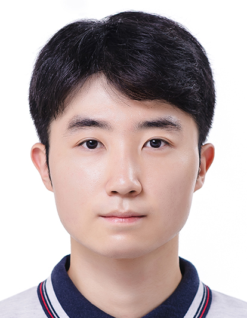

Jae-Woo Kim
I'm a Ph.D. student at ACSL @ GIST AI, advised by Prof. Ue-Hwan Kim. My research interest is scene analysis (change detection & captioning) and machine learning for computer vision.
Email / Google Scholar / Semantic Scholar / LinkedIn / Github

*: Equal contributions
This template is from Jon Barron.